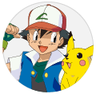

<nav class="navbar navbar-expand-lg navbar-light bg-light">
    <a class="navbar-brand" [routerLink]="['/principal']">
        
      </a>
    <button class="navbar-toggler" type="button" data-toggle="collapse" data-target="#navbarSupportedContent" aria-controls="navbarSupportedContent" aria-expanded="false" aria-label="Toggle navigation">
      <span class="navbar-toggler-icon"></span>
    </button>

    <div class="collapse navbar-collapse" id="navbarSupportedContent">
      <ul class="navbar-nav mr-auto">
        <li class="nav-item active">
          <a class="nav-link" [routerLink]="['/principal']">Inicio <span class="sr-only">(current)</span></a>
        </li>
             <li class="nav-item active">
                  <a class="nav-link" [routerLink]="['/buscar']">Buscar</a>
                </li>
      </ul>
      <ul>
        <li class="lista">
<div *ngIf="correo" class="usuariolog">
  <div class="row">
    <div class="col"><p>{{correo}} <br>
    <small [routerLink]="['/login']" (click)="cerrarSesion()">Salir</small></p></div>
    <div class="col"><p></p></div>
  </div>


</div>
        </li>
      </ul>
    </div>
  </nav>
